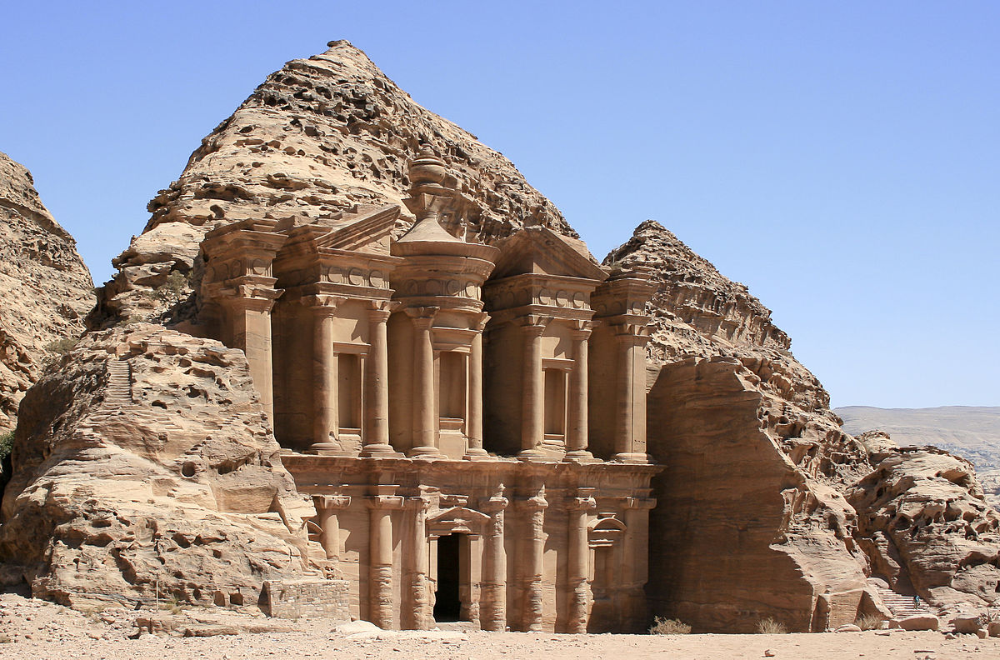

What is Tourism?
Tourism istravelling for pleasure or business; also the theory and practice of touring, the business of atracting, accommodating, and entertaining tourists, and the business of operating tours.
It means peopletraveling for fun. It includes activities such as sightseeing and camping. people whotravel for fun are called "Tourists". places where many tourists stay are called "Resorts". Some peopletravel to do an activity which they cannot do at home.
Why is Tourism important?
Tourism is vital for the success of many economies around the world. There are several benefits of tourism on host destinations. Tourism boosts the revenue of the economy, creates thousands of jobs, develops the infratructures of a coutry, and plants a sense of cultural exchange between foreigners and citizens.
Benefits of Tourism (for Coutries)
Growth and boost in Economic activities. Boost wide scale indutry revenues. Infratructure development. Coutry's improvedbrand image. Source of foreign exchange earnings. Source of employment generation.
Benefits of Tourism (for people)
Tourism enhances the peace, prosperity and happiness in the society and improves the universal friendship concept. It also improves the mutual cooperation. It encourages civic involvement and also provides cultural exchange between hosts and guests.
Tourism in India
Tourism has great importance in the economy and cultural development of India. It promotes national integration. It makes us aware of the beauty and rich cultural heritage of our nation. It promote inter-regional relationship. Tourism encourages cultural pursuits and provides support to local handicrafts. The Worldtravel and Tourism Council calculated that tourism generated Rs. 16.91 lakh crore (US$ 240 billion) or 9.2% of India's GDP in 2018 and supported 42.673 million jobs, 8.1% of its total employment.
| Sr. No. | Name of place | City |
| 1. | The Taj Mahal | Agra |
| 2. | Harmandir Sahib- The Golden Temple | Amritsar |
| 3. | The Red Fort | New Delhi |
| 4. | The Gateway of India | Mumbai |
| 5. | Amer Fort | Jaipur |
For more details: Top-15 Tourist Sites of India
| Sr. No. | City | Reason of it's Fame | Country |
| 1. | Pais | Eiffel Tower | France |
| 2. | Cuzco | Macchu Picchu | Peru |
| 3. | Arizona | The Grand Canyon | USA |
| 4. | Hong Kong | Tian Tan Buddha | Hong Kong |
| 5. | New York | Statue Of Liberty | USA |
For more details: Top-15 Tourist Sites of World
The New 7 Wonders of the World
1. Great Pyramid of Giza, Egypt
2. Great Wall of China

3. Petra, Jordan

4. Colosseum, Rome

5. Chichen Itza, Mexico

6. Machu Picchu, Peru

7. Taj Mahal, India